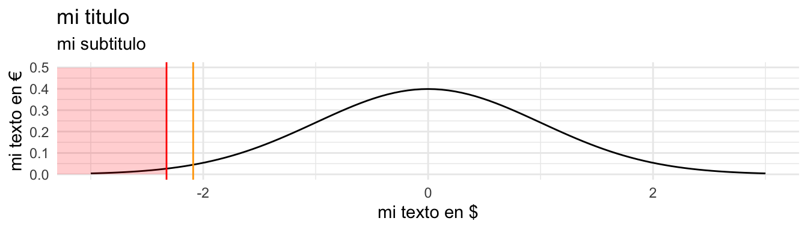
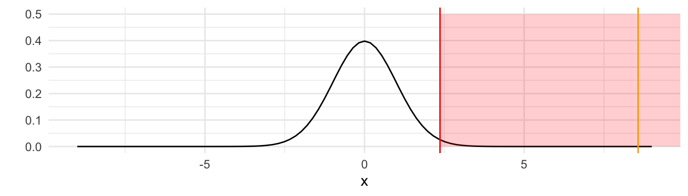
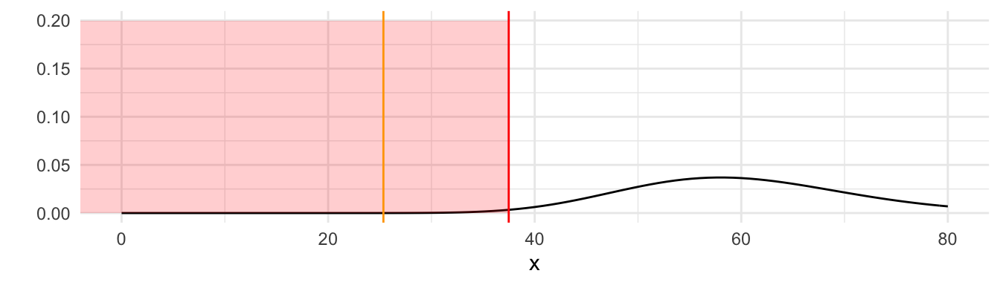
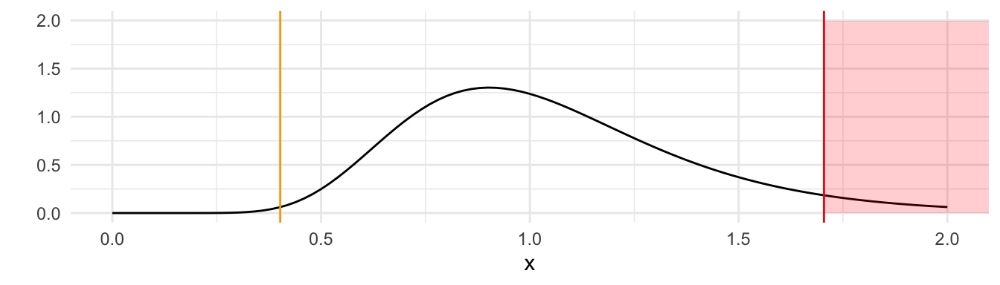

Chapter 12 Pruebas de hipótesis
Las pruebas de hipótesis se componen de 4 elementos:
- Hipótesis Nula
- Hipótesis Alternativa
- Estadístico de Prueba
- Región de Rechazo
12.1 Ejemplo de estadístico Z
12.1.1 Diferencia de Medias
12.1.2 Diferencia de Proporciones
CDE: 5.2.15X: Antes, Y: Después
\(\hat{p_X} = 14/488 = 0.0287\)
\(\hat{p_Y} = 5/488 = 0.0102\)
Hipótesis Nula: \(H_0: \mu_X-\mu_Y = 0\)
Hipótesis Alternativa: \(H_1: \mu_X-\mu_Y< 0\)
Estadístico de Prueba: \(Z =\frac{(\hat{p_X}-\hat{p_Y}) - (p_X-p_Y)}{\sqrt{\frac{(\hat{p_X})(1-\hat{p_X})}{n}+\frac{(\hat{p_Y})(1-\hat{p_Y})}{m}}} = \frac{(0.0287-0.0102) - (0)}{\sqrt{\frac{(0.0287)(1-0.0287)}{488}+\frac{(0.0102)(1-0.0102)}{488}}} = 2.0894\)
Región de Rechazo: \(RR = \{Z < Z_{0.01}\} = \{Z < qnorm(.01)\} = \{Z < -2.3263\}\)
library(tidyverse)
ggplot(data = data.frame(x = c(-3, 3)), aes(x)) +
stat_function(fun = dnorm, n = 101, args = list(mean = 0, sd = 1)) +
theme_minimal() +
labs(x = "mi texto en $",
y = "mi texto en €",
title = "mi titulo",
subtitle = "mi subtitulo") +
geom_vline(xintercept = -2.3263, color = "red") +
geom_rect(aes(xmin=-Inf,xmax=-2.3263,ymin=0,ymax=.5),alpha=0.1,fill="red")+
geom_vline(xintercept = -2.0894, color = "orange")
No Rechazamos H_0
- Obtenga el nivel de significancia descriptivo o valor p
valor-p = \(pnorm(-2.09) = 0.0183089\)
12.2 Ejemplo de estadistico T
12.2.1 Diferencia de medias pareada
CDE: 5.2.16X: IQ a los 16 años Y: IQ actual \(\bar{D}: \bar{Y}-\bar{X} = 6\) \(S_{\bar{D}} = 7\)
Hipótesis Nula: \(H_0: \mu_D = 0\)
Hipótesis Alternativa: \(H_1: \mu_D > 0\)
Estadístico de Prueba: \(T =\frac{\bar{D} - \mu_{\bar{D}}}{\sqrt{\frac{{S_{\bar{D}^2}}}{n}}} = \frac{6 - 0}{\sqrt{\frac{7^2}{100}}} = 8.5714\)
Región de Rechazo: \(RR = \{T < T_{99, 0.01}\} = \{T < qt(.99,99)\} = \{Z < 2.3646\}\)

Rechazamos H_0
valor-p = \(pt(8.5714, 99, lower.tail = F) \sim 0\)
12.3 Ejemplo de estadistico J
CDE: 5.2.23Hipótesis Nula: \(H_0: \sigma^2 = 4\)
Hipótesis Alternativa: \(H_1: \sigma^2 < 4\)
Estadístico de Prueba: \(J =\frac{(n-1)S^2}{\sigma^2} = \frac{(61-1) 1.69}{4}= 25.35\)
Región de Rechazo: \(RR = \{J < J_{0.01,60}\} = \{J < qchisq(.01,60)\} = \{J < 37.4849\}\)

Rechazamos H_0
valor-p = \(pchisq(25.35, 60) \sim 0\)
12.4 Ejemplo de estadistico F
CDE: 5.2.18Hipótesis Nula: \(H_0: \sigma^2_1 = \sigma^2_2 \Rightarrow \frac{\sigma^2_1}{\sigma^2_2} = 1\)
Hipótesis Alternativa: \(H_1: \sigma^2_1 > \sigma^2_2 \Rightarrow \frac{\sigma^2_1}{\sigma^2_2} > 1\)
Estadístico de Prueba: \(F =\frac{S_2^2 \sigma^2_1}{S_1^2\sigma^2_2} = \frac{37000}{92000} = 0.4021739\)
Región de Rechazo: \(RR = \{F > F_{0.05,39,39}\} = \{F > qf(.95,39,39)\} = \{F > 1.704465\}\)

No Rechazamos H_0
valor-p = \(pf(0.4021739, 39, 39, lower.tail = F) \sim 0.997279\)